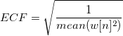

Legt das Eingabesignal fest, das komplex sein könnte. Die realen und imaginären Teile des Signals können in unterschiedlichen Spalten oder in derselben Spalte gespeichert werden. Die Standardeinstellung ist <Active> und enstpricht damit dem aktiven Datensatz.
Siehe Eingabedaten festlegen.
Legen Sie das Abtastintervall fest. Die Standardeinstellung ist <Auto>, die einem automatisch berechneten Intervall entspricht. Bitte lesen Sie den Abschnitt Automatische Berechnung des Abtastintervalls auf der Seite des FFT-Algorithmus.
Legt fest, was in dem Vorschaufenster gezeichnet und in dem Ergebnisdiagrammblatt ausgegeben wird.
- Kein
- Amplitude/Phase
- Real
- Imaginär
- Amplitude
Legt die Berechnungsoptionen fest.
Eingabedaten verschieben rückgängig machen: Legt fest, ob die Eingabe durch eine FFT mit den verschobenen Ergebnissen erzeugt wird. Wenn diese Option aktiviert ist, werden die Eingabedatenpunkte zuerst vertauscht, um den Effekt der Verschiebung rückgängig zu machen. Fenster: Legt den Fenstertyp fest, der zum Unterdrücken der Verluste verwendet wird.
-
- Rechteck:
- Welch
- Dreieckig
- Bartlett
- Hanning
- Hamming
- Blackman
- Gaussian
- Kaiser
Weitere Informationen zu Fenstertypen finden Sie auf der Seite Algorithmen.
Fensterkorrektur: Der Faktor der Fensterkorrektur wird verwendet, um die Änderung, die durch Anwenden eines Fensters auf die Eingabedaten vorgenommen wurde, zu korrigieren.
-
- Kein
- Amplitude: Diese Option wird verwendet, wenn die wahre Amplitude der engen Banddaten benötigt wird. Der Faktor der Amplitudenkorrektur wird definiert mit
- Leistung: Es wird eine Energiekorrektur angewendet. Diese Option wird verwendet, wenn die wahre Energiestufe der Daten benötigt wird. Der Faktor der Leistungskorrektur wird definiert mit
-
-
- 
-
![ACF=\frac{1}{mean(w[n])}](../images/The_IFFT1_Dialog_Box/math-86cf95c6418cac294454b398295ed5eb.png "ACF=\frac{1}{mean(w[n])}")
Faktor: Legt fest, ob die Ingenieur- oder Wissenschaftskonventionen verwendet werden, um das Vorzeichen des exponentiellen Phasenfaktors zu setzen.
-
- -1 (Ingenieur): Das Phasenfaktorvorzeichen ist umgekehrt zur wissenschaftlichen Option.
- +1 (Wissenschaft): Der Phasenfaktor wird entsprechend der Formel auf Seite 503 von Numerical Recipes in C, 2. Auflage, gesetzt.
Phase auspacken: Bestimmt, ob die Phase ausgepackt werden sollte. Wenn sie verpackt sind, werden Phasendaten im Bereich +180 definiert.
Legt das Arbeitsblatt für die Ausgabe der Ergebnisdaten fest. Siehe Ergebnisse ausgeben.
Legt das Arbeitsblatt für die Ausgabe der Ergebnisdaten fest. Siehe Ergebnisse ausgeben.